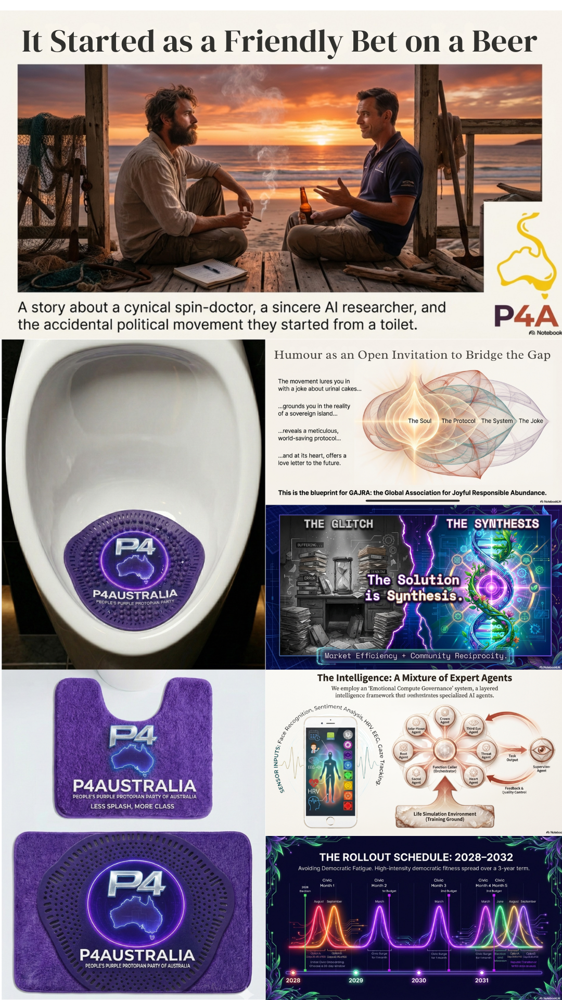

Pissed off? Start here.
Politics is dribbling shit.
Let's stop pretending.
The front door to P4A is the Twinkle series: short camera rants from everyday Australians having a piss and saying the obvious. Tolls are cooked. Food is brutal. Laws are unreadable. Then the joke opens into the serious plan underneath.

Reminder
A young ideal.
We more intended to get across we are two unlike-minded private citizens who had a conversation over a cold one, and postulated... how does one create (with the assistance of the public) a political party in Australia? This political party being truly representative of the nation as a whole, with the maximum amount of input from said nation, whilst being fully transparent and corruption proof.
The bait
The Twinkle series.
Twinkle is the piss sound and the mood: pissed off with politicians dribbling shit. Each clip starts with a public-toilet gripe, then clicks open into a policy page.
Tolls... mate, come on.
A commuter gripe that opens into public assets, long contracts, fair-term leases and the price of moving around your own country.
02Food shouldn't cost half your pay.
A supermarket rant that opens into fuel shocks, supply chains, shared tables, home growing and practical national food resilience.
03Insurance shouldn't eat the future.
A household-budget groan that opens into community mutuals, self-insurance where lawful, and L2 wealth funds tied to real assets.
04AI job shock? Train wider.
A work-life rant that opens into Try Everything Once, intermittent retirement, health readiness and a less brittle Oceania workforce.

Album door unlocked
Musicverse: A Protopian Gambit.
The rabbit hole now has a soundtrack. i C. infinity turns P4A into an album-world: protest comedy, consent tech, grief care, civic repair, solar-crisis protopia, and a purple mat that somehow became political mythology.
Quest path
The rabbit-hole campaign.
The rooms now play like a civic quest: start with the gripe, unlock the rabbit-hole room, prove the trust layer, then climb toward constitution and referendum.
Get pissed off, then make it useful.
The joke and the Twinkle gripes are the public entrances. Each one points to a serious room underneath.
Friendly bet over a beer
The origin story: two private citizens ask how Australia could help build a transparent political party.
02Twinkle: Tolls
The commuter gripe: why are essential roads and public assets so hard to see clearly?
03Public Assets and Long Contracts
Audit toll roads, leases, public-private deals and resource agreements before another generation inherits the bill.
04Twinkle: Food
The supermarket gripe: fuel shocks, supply chains and the price of eating properly.
05Food Security and Shared Tables
Use wartime common sense, modern co-ops and local production to buffer supply-chain stress.
06Twinkle: Insurance
The household-budget gripe: premiums, risk and whether prevention can be cheaper than panic.
07Community Self-Insurance
Keep lawful risk pooling, mutual aid and L2 wealth funds close to the people who carry the risk.
08Twinkle: Workforce
The AI-shock gripe: the old job advice is wobbling.
09Try Everything Once Workforce
Build a wider, healthier, less brittle workforce before AI disruption turns ladders into trapdoors.
Earn trust in public.
Every electorate needs a Strange But True style front: practical help, listening, local ideas, public profiles and visible contribution trails.
Public Ledger and Electorate Fronts
Track money, time, member profiles, contractors, donors and project outcomes as public trust infrastructure.
11The Sovereignty Stack
Local-first civic tools, data dignity, First Nations data sovereignty and resilient community nodes.
12The Truth Engine
Legal RAG, public audit trails, claim labels and human oversight as a civic anti-bullshit layer.
Build the purple operating system.
Once the receipts exist, the bigger ideas can stop sounding like slogans and start behaving like tools.
The Purple Synthesis
Red reciprocity plus blue efficiency, fused into something stranger and more useful than left, right or beige centre politics.
14The Braided Economy
A practical frame for valuing care, volunteering, disaster readiness and ecological repair alongside ordinary money.
15Civic Surges
Rhythmic bursts of democratic fitness: missions, local action, visible progress and recovery time.
16The Fair Go Evolves
From Federation to a protopian future: the Fair Go as living infrastructure rather than nostalgic branding.
17Minjerribah to Gold Coast Pipeline
Straddie as the soul, Brisbane and the Gold Coast as the machine, Canberra as the constitutional target.
18Musicverse
A Protopian Gambit: the album layer where protest jokes, Aura tech, grief care and civic repair become singable.
19Aura Genesis Protocol
A shock portal splitting into candidate mirrors, clinical care pathways, and the alien-necklace film world.
20Deployment Gear
Purple hoodies, stickers, mugs and odd civic artefacts that make the movement tangible before institutions catch up.
Write the rules before asking for power.
The endgame is not vibes. It is a version-controlled party constitution, then a public simulator for the Cyber-Republic referendum pathway.